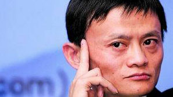

人物
目录马云:一个改变了中国的男人
马云，一个平凡的名字，却在中国卷起了一阵互联网漩涡。1988年毕业于杭州师范学院外语系，同年担任杭州电子工学院英文及国际贸易教师，1995年创办中国第一家互联网商业信息发布网站“中国黄页”，1998年出任中国国际电子商务中心国富通信息技术发展有限公司总经理，1999年创办阿里巴巴，并担任阿里集团CEO、董事局主席，2013年5月10日，辞任阿里巴巴集团CEO，继续担任阿里集团董事局主席。国人评价马云多是觉得他是一个神话般的人物，是中国的骄傲。而外媒评价马云，则是觉得他是一个像沃伦·巴菲特一样智慧的人。
马云是一个有理想的人，拥有一个不屈的灵魂。（温家宝总理评)
看到大陆的年轻人这么棒我感到非常开心。（李嘉诚评）
马云是一个非常优秀的CEO，是中国互联网的一个传奇。（郎咸平评价）
深凹的颧骨，扭曲的头发，淘气地露齿而笑，拥有一副5英尺（1.53米）、100磅（45千克）的顽童模样，这个长相怪异的人有着拿破仑一样的身材，同时也有着拿破仑一样伟大的志向。（《福布斯》杂志评）
马云像中国的沃伦·巴菲特。（英国《泰晤士报》评价）
面对阿里巴巴上市，新华社称赞了投资者对中国这家本土企业及其创建人赋予的信任，并称之为“中国奇迹”。（新华社评价）
黄凯：从三国中发现新的玩法
 或许很多人并不知道黄恺，但是很多人都熟悉一款风靡全国的桌面游戏——《三国杀》。而这款游戏的设计师，正是还未满三十岁的北京优卡桌游文化有限公司的设计师黄恺。以《三国杀》游戏创始人身份，一跃进入《福布斯》中文版首度推出“中美30位30岁以下创业者”的中国榜名单里，创造这份奇迹，黄恺只用了短短6年。
或许很多人并不知道黄恺，但是很多人都熟悉一款风靡全国的桌面游戏——《三国杀》。而这款游戏的设计师，正是还未满三十岁的北京优卡桌游文化有限公司的设计师黄恺。以《三国杀》游戏创始人身份，一跃进入《福布斯》中文版首度推出“中美30位30岁以下创业者”的中国榜名单里，创造这份奇迹，黄恺只用了短短6年。
黄恺,无心插柳创造本土桌游,出生于1986年的黄恺，是一个不折不扣的标准80后。年轻、热血、充满了想象力和行动力。
对一个从小热爱玩游戏和画画的人来说，随时随地的游戏涂鸦成为家常便饭，设计不同的游戏试验成为黄恺的一大爱好。
在黄恺大二的那年暑假，他在北京一家外国人所开的桌游吧里接触到了桌面游戏。而桌游的世界里，包罗万象，涉及的题材包括战争、贸易、文化、艺术、城市建设、历史甚至是电影，这让黄恺感到非常新鲜。
“那是2006年，中国还没有一款真正属于自己的桌面游戏，这让我有了创作的冲动。”在4月1日接受本报记者专访时，黄恺说。
由于当时大多数桌游都是舶来品，背景和角色对于中国的大部分玩家来说都很陌生。“能不能自己设计一款中国玩家的游戏?”黄恺就展开了大量的探索，开始尝试把游戏的角色替换成身边的人：熟悉的好友、同宿舍的兄弟，甚至在讲台上讲课的老师，并且度身定做了“独门绝技”。
当尝试创作到了一个阶段，黄恺又迸发出了另外一个奇思妙想：为什么不去用富有浓郁中国色彩的三国时期的背景设定呢?毕竟，三国故事更有得天独厚的群众基础。不到一年，黄恺就设计出了《三国杀》。
游戏设计出来了，黄恺的心思也再次转动了：既然国外的桌游都能风生水起，那《三国杀》又何尝不可?黄恺和另外两个朋友合伙琢磨了一下，一番讨论后，成立工作室、上淘宝开网店、贩售《三国杀》，三人一拍即合。
当尝试着把第一套《三国杀》游戏放到淘宝店时，黄恺并没有意识到这款游戏能带给中国桌游怎样大的震撼。“最开始只是想随便赚点零花钱花。”黄恺笑着回忆。
经过焦急的等待后，当第一笔生意提示交易成功时，幸运之门也随即向他开启，之后销量开始逐渐上升，半年内更是卖出了上百套。
真正的转机出现在2007年。“从2007年初，开始每个月能卖出几十套的游戏，这其中不仅仅只是《三国杀》，还包含了其他手工制作的游戏。”黄恺说，通过旺旺和买家交流后发现，许多买家玩过之后觉得有趣就会推荐给其他人，这样口口相传，逐渐就扩大了玩家圈子，尤其是在当时的校园里，传播速度更快。
“我开始慢慢意识到互联网时代改变的不只是人们的娱乐方式，甚至能挖掘出边缘产业——桌面游戏。”三国杀游戏设计师黄恺感慨地说。
在淘宝上挣下第一桶金，让他兴奋不已，成立正式公司也顺理成章了。2008年，即将毕业的黄恺成立了全国首家桌游公司——游卡桌游，并担任首席设计师。黄恺至今都还记得，为了赶在次年1月1日前能出版《三国杀》的正式游戏，他和伙伴们连续四个月没日没夜地设计绘制卡片，为了将游戏制作得更有趣，同伴也常常争论得面红耳赤。那时候正值毕业，论文和毕设都是硬关，测试卡牌之余还要不停在各个学校之间来回地跑动，熬夜失眠更是家常便饭。
潇湘评论：当今桌面游戏风靡全球，黄恺设计的《三国杀》是桌面游戏的佼佼者。《三国杀》的全球玩家已经超过一亿人次，他也凭借这款游戏游戏进入福布斯，比肩全球创富精英，相信以后他以后会有更多的发展与突破。欲知更多资讯请关注财富湖南
返回顶部
韩寒：一个被嘲笑的成功作家
韩寒，1982年9月23日出生于上海市金山区亭林镇，中国作家、导演、职业赛车手。1999年，他以《杯中窥人》一文获得首届全国新概念作文比赛一等奖。 2000年，在上高一的韩寒退学，后出版首部长篇小说《三重门》。 2001年，他出版文集《零下一度》，该书获得当年全国图书畅销排行榜第一名。 2002年，他出版小说《像少年啦飞驰》。2003开始职业赛车生涯。2004年3月，他出版文集《韩寒五年》。2005年开通博客，开始博客写作。 2006年9月，发行个人首张唱片书《寒·十八禁》。2009年，他主编《独唱团》。2010年，韩寒登上美国《时代周刊》封面。 2011年，他出版杂文集《青春》。2012年6月，韩寒发布了APP阅读应用“ONE·一个”。2013年，他出版《一个：很高兴见到你》。2014年7月导演的《后会无期》在中国内地上映。
韩寒生于上海市金山区亭林镇亭东村二大队，小学时就读于亭林中心小学，初中时就读于朱泾镇的罗星中学，初中时开始有文章发表，并作为体育特长生以低于录取线14分的成绩破格考入上海市松江二中。1997年，韩寒在《少年文艺》等刊物发表《生涯模式》等作品。
1999年，在上高一的韩寒以《求医》和《书店》通过首届全国新概念作文比赛初赛，并以《杯中窥人》一文获得首届全国新概念作文比赛一等奖。后因期末考试七科不及格而留级，被报道后引发社会关于素质教育政策及“学校应当培养全才还是专才”等系列教育问题的激烈讨论。
2000年，他凭借作品《穿着棉袄洗澡》获得第二届全国新概念作文比赛二等奖。他发表的首部小说是一部反映上海初三学生生活的小说《三重门》。通过这部小说的发行，他一举成名。该书累计发行200万册，中国近20年销量最大的文学类作品。在留级后，再次挂科七门并于4月4日在高一退学。退学前，在松江二中老师们面前，韩寒被问起，你退学了，以后要拿什么养活自己。“稿费啊。”韩寒说。他的回答引来一片笑声。
然而正是这样一个被嘲笑的人，他影响了80乃至90后两代人的思想，。
返回顶部
还有许许多多的人，在为人们的生活奋斗和付出，如：比尔盖茨、李彦宏、马克·扎克伯格、乔布斯等等……感兴趣的话你可以自己搜索！


{kind=link}
{kind=link}
{kind=link}
{kind=link}